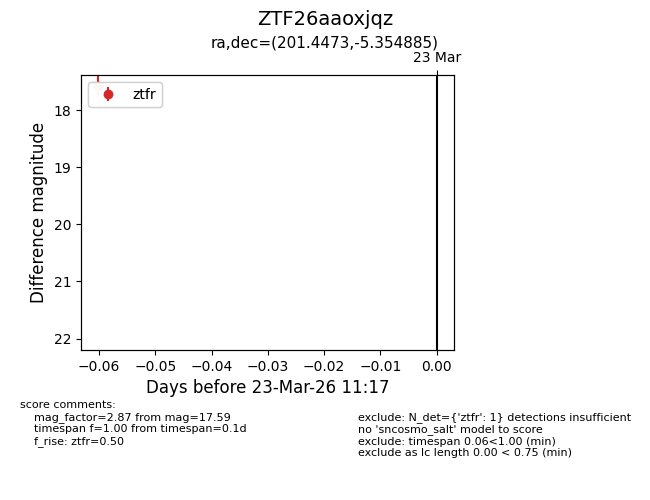
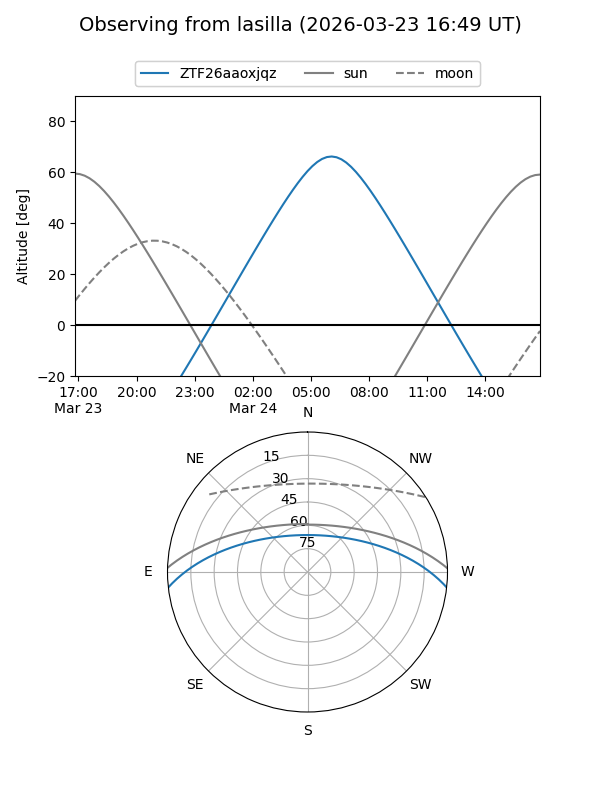
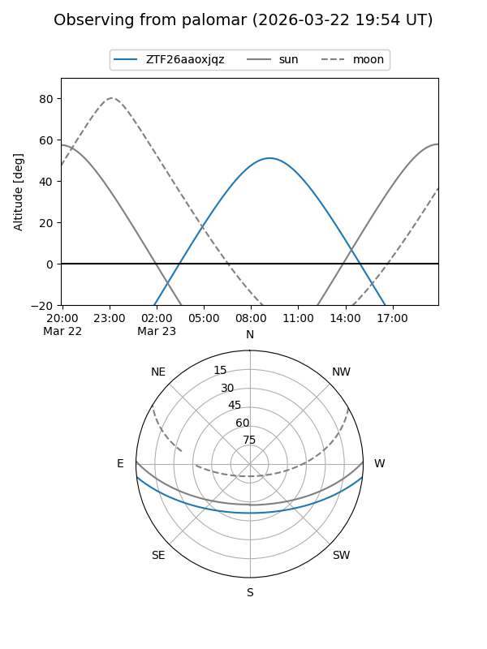

ZTF26aaoxjqz
Target ZTF26aaoxjqz at 2026-03-23 11:19
Aliases and brokers:
FINK: link
Lasair: link
ALeRCE: link
alt names
ZTF26aaoxjqz (ztf,fink_ztf)
Coordinates:
equatorial (ra, dec) = 201.4473,-5.35488
equatorial (HMS+DMS) = 13:25:47.35,-05:21:17.59
galactic (l, b) = (318.5466,+56.47187)
Flags:
Photometry:
last ztfr=17.59
1 ztfr detections
Lightcurve

Visibility


Additional plots